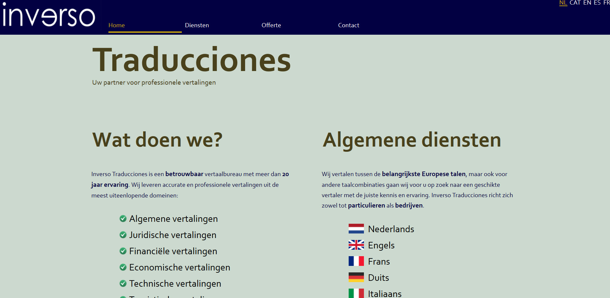

Inverso Traducciones: Website die ik heb ontworpen voor een vertaler in het kader van het vak Webontwikkeling 1. Deze website is een statische website die enkel en alleen gebouwd is met HTML en CSS
KipKapp: IoT-project in samenwerking met de cloud van IBM voor de projectweek van het vierde semester in de opleiding. Hierbij heeft onze groep een slim kippenhok gemaakt met behulp van sensoren, een raspberry pi, Python en de cloud.
Voor een internationale week in Hasselt heb ik een project gemaakt rond drones in Python, met behulp van het Robotics Operating System (ROS) Framework. Het doel van het project was om de drone te laten vliegen en daarna computer vision toe te passen om zo aardbeien te tellen in een virtuele serre.
Als opdracht voor het vak Programmeren van Visuele Gebruikersomgevingen, heb ik het spel PiCross geïmplementeerd. De nadruk bij dit project lag vooral op de user interface. Met behulp van C# en WPF heb ik een goed werkend spel kunnen maken met een mooie user interface.
Met Java heb ik al het meeste ervaring. Vooral in webapplicaties, maar ook in desktopapplicaties. Dit project voor het vak Object-georiënteerd ontwerpen is een applicatie om een evaluatie te maken. De gebruiker kiest hiervoor zelf de topics en de vragen, net zoals een eigen gekozen puntensysteem.
Als afstudeerproject heb ik, samen met vier andere studenten, een testing-framework gemaakt in Python. Dit testing-framework is vooral bedoeld voor mensen/studenten die net beginnen programmeren en waarbij de feedback die ze krijgen zeer belangrijk is. Ook geeft het framework de mogelijkheid om punten toe te kennen aan tests, waardoor het eveneens als evaluatie-tool kan worden gebruikt.
Ten slotte heb ik in groep meegeholpen aan een webshop voor het vak Testing en het bedrijf Prato. In samenwerking met Prato is onze groep, met een paar andere groepen, gekozen om op bedrijfsbezoek bij hen te gaan.